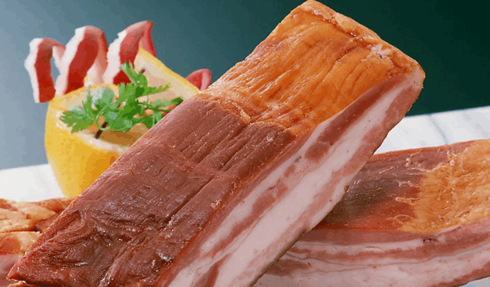
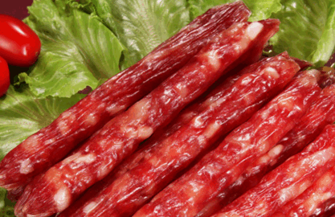
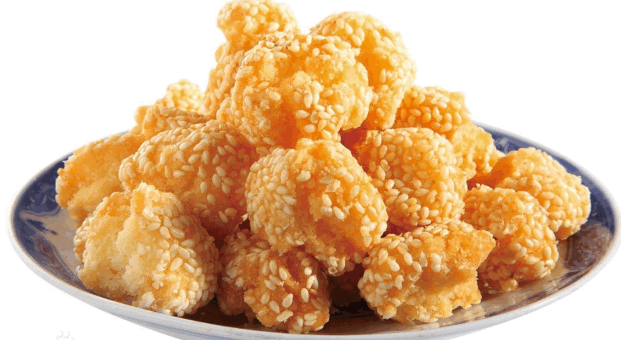
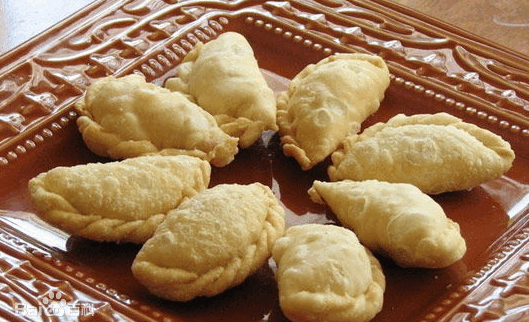
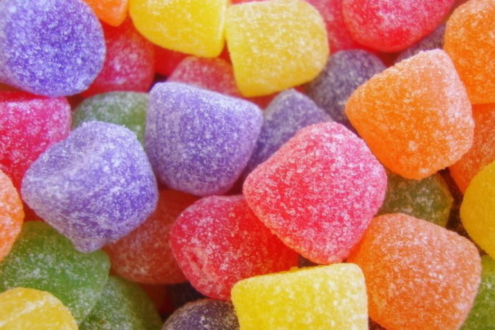
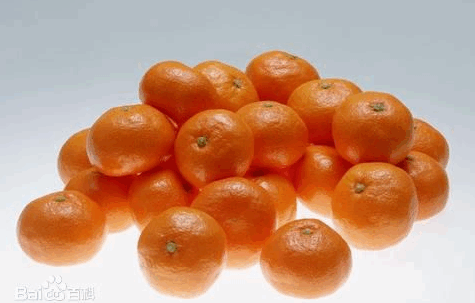

腊肉
腊（xī là 同“臘”）肉是指肉经腌制后再经过烘烤（或日光下曝晒）的过程所制成的加工品。腊肉的防腐能力强，能延长保存时间，并增添特有的风味，这是与咸肉的主要区别。腊肉并非因为在腊月所制，而为腊肉，腊月的腊（là）与腊肉的腊（xī）在古文里并非同一个字，亦即，腊月的腊是繁体的腊，而腊肉的腊本来就是腊月的腊的简化字。所以，腊肉之所以称为腊肉，至于为什么现在人们都读là，而不读xī，除了简化字的原因使两个字没有了区别以外，可能确实跟腊肉一般都在腊月里制作以待年夜饭之用有关。

腊肠
中国腊肠约创制于南北朝以前，始见载于北魏《齐民要术》的“灌肠法”，其法流传至今。腊肠可分为三大类：生抽肠，又名“白油肠”；老抽肠及鸭或猪肝肠（统称润肠）。腊肠为广东、香港和澳门和南方其他地区常见的食品，是把猪肉放入用猪小肠制成的肠衣，经过压缩、脱水及晒干等程序而成。广东腊肠是其代表。广东腊肠是以猪肉为原料，经切碎或绞碎成丁，用食盐、硝酸盐（防腐）、白糖、曲酒、酱油等畏料腌制后，充填入天然肠衣中，经晾晒、风干或烘烤等工艺而制成的一类生干肠制品。贮放腊肠，如放冰箱内，通常可保存鲜味3个月左右。主要产地有广东、广西、四川、湖南及上海等。各种腊肠除了用料略有分别外，制法是大致相同的。

笑口枣
笑口枣为圆球形，实心，外粘芝麻，表面有一裂口，有大小两种。大的每公斤24只，小的有如如桂圆大小。 笑口枣是广州小吃中的油炸小吃品种，因其经油炸后上端裂开而得名。笑口枣香甜暄酥，十分可口。广州一般的吃早茶的地方，都有笑口枣。同时笑口枣也是广州人春节必备年货之一。

油角
油角又叫角仔，是广东广州等地著名的传统小吃，属于年节食品。各个地方口味不同，所用原料也不尽相同，有的是甜的，再有就是菜的，方法基本相同，就是所用陷料不同，甜的包糖，咸的换成蔬菜即可。在广东过年，油角少不了。以前，离春节还有十天廿日，家家户户就要开油镬，炸煎堆油角了。开开油镬炸些煎堆油角，是为求来年的日子也像那只油镬似的—油油润润、富富足足。

糖果
糖果是糖果糕点的一种，指以糖类为主要成份的一种小吃。若水果或坚果类食物裹上糖衣，则称为甜食（如糖葫芦）。在亚洲文化广义上，巧克力及口香糖很多时亦会视为糖果的一种。在欧美国家，糖果是仅指指使用白砂糖或麦芽糖下去制作的产品。而古时欧美甚至使用蜂蜜为原料制作糖果，但因为蜂蜜成分过多不容易控制而不适用工业化生产。

橘子
在中国的广东地区流行着新春佳节互赠橘子的风俗，这个风俗是与中国传统文化紧密相连的。在中国民间，人们习惯上把橘字写成桔字，而桔字和吉字又很相近，新春时节中国民间就用橘子相互馈赠以求吉利，希望在新的一年里大吉大利，小小的橘子也就成了人们的护身符。 通常，女人到亲戚朋友家里拜年的时候都要准备一些红橘，用篮子提上作为新春的礼物，而所得的回赠礼物也都是这些东西。